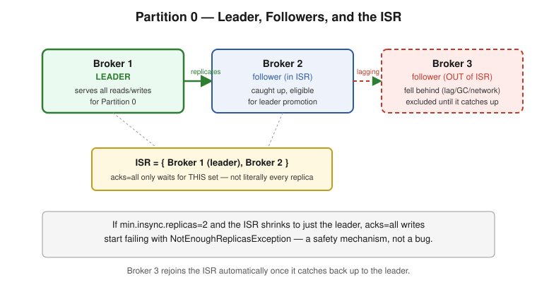
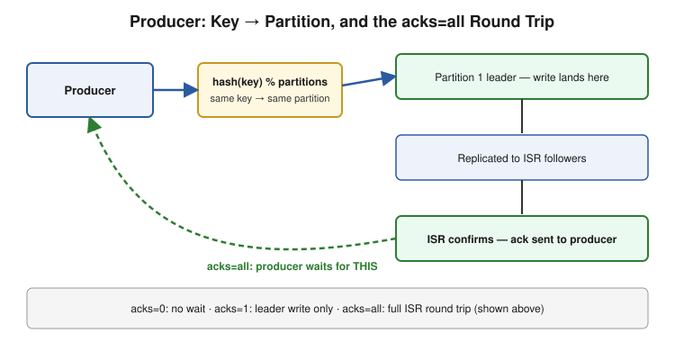
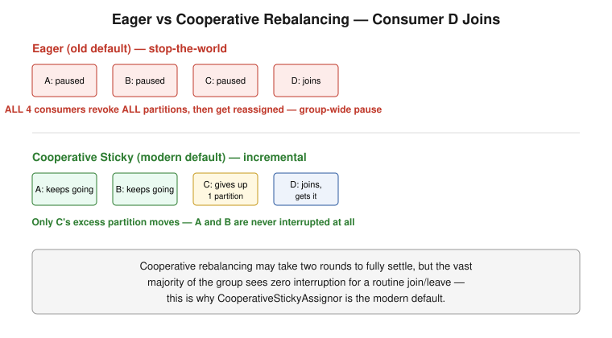
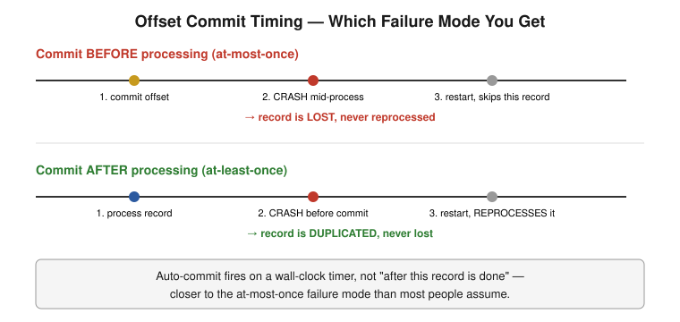
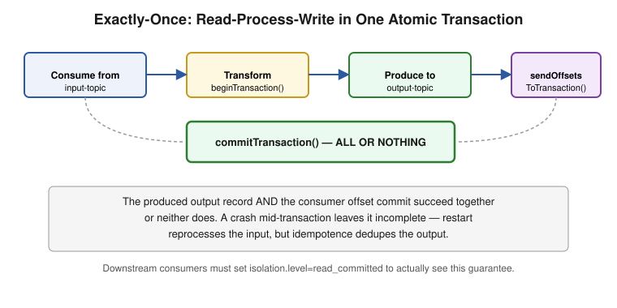
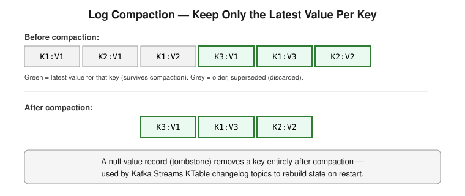

Core Kafka concepts for a senior/10-YOE interview: architecture and storage internals, producers, consumers and consumer groups, delivery semantics and reliability, retention/compaction/performance. Every section has a worked example and an explicit pitfall; every file ends with an Interview Q&A section.
| # | Part | Covers |
|---|---|---|
| 1 | Architecture & Core Concepts | Brokers, topics, partitions, the commit log model, offsets, replication, leader/follower, ISR, controller election |
| 2 | Producers | Partitioning strategy, acks, batching/linger.ms, idempotent producer, producer retries and ordering |
| 3 | Consumers & Consumer Groups | Consumer groups, partition assignment, rebalancing (eager vs cooperative), offset commit strategies, max.poll.interval.ms |
| 4 | Delivery Semantics & Reliability | At-most-once/at-least-once/exactly-once, idempotent producer + transactions, the dual-write problem, DLQs |
| 5 | Retention, Compaction & Performance | Segment files, retention policies, log compaction, page cache/zero-copy, common production tuning knobs |
Multhithreading/ (consumer poll loops and thread-per-consumer patterns), Microservice-Patterns/ (Kafka as the backbone for event-driven architectures and the Saga pattern), SpringAndSpringBoot/ (Spring Kafka wraps everything here behind @KafkaListener/KafkaTemplate).Last updated: July 2026
Brokers, topics and partitions as the unit of parallelism, the append-only commit log model, offsets, replication via the in-sync replica (ISR) set, leader/follower mechanics, and controller election. Interview Q&A at the end.
What it is: Kafka is a distributed, partitioned, replicated commit log. Producers append records to topics; consumers read those records independently, at their own pace, from wherever they last left off. Unlike a traditional message queue, reading a message does not remove it — Kafka retains records for a configured period (or forever, with compaction), and multiple independent consumers can each read the exact same data at different offsets simultaneously.
Producers → [ Topic: orders (3 partitions) ] → Consumer Group A (order-service)
→ Consumer Group B (analytics-service)
→ Consumer Group C (fraud-detection)
Each consumer group reads the topic independently and tracks its own position — this is the core architectural difference from a queue, where a message is gone once one consumer takes it.
What a partition is: a topic is a logical name; a partition is the actual physical unit — an ordered, immutable, append-only sequence of records, stored as a set of segment files on disk. A topic with 6 partitions is really 6 independent logs, potentially spread across 6 different brokers.
Topic: orders (3 partitions)
Partition 0: [msg0][msg1][msg2][msg3]... → offset increases left to right
Partition 1: [msg0][msg1][msg2]...
Partition 2: [msg0][msg1][msg2][msg3][msg4]...
Ordering is only guaranteed within a single partition, never across partitions of the same topic. This is the single most important architectural fact in Kafka — it's the reason partition count is a capacity-planning decision (more partitions = more parallelism) and partition key choice is a correctness decision (same key must land on the same partition if order between those specific records matters).
⚠️ Pitfall — "Kafka preserves order" is only half true: Kafka preserves order per partition, not per topic. If you need all events for a given
orderIdto be processed in order, you must key byorderIdso they consistently land on the same partition — sending unkeyed (round-robin) records to a multi-partition topic gives you no cross-record ordering guarantee at all.
What it is: every record within a partition has a monotonically increasing offset — its position in that partition's log. An offset is meaningful only in the context of (topic, partition) — offset 42 in partition 0 and offset 42 in partition 1 are unrelated records.
// A ConsumerRecord carries its own coordinates
ConsumerRecord<String, String> record = ...;
record.topic(); // "orders"
record.partition(); // 1
record.offset(); // 42
Consumers track "the next offset to read" per partition, and committing an offset is how a consumer group records its progress (stored in Kafka's internal __consumer_offsets topic, not in Zookeeper for modern Kafka). See Part 3 for the full mechanics of when/how offsets get committed and why that timing is where most reliability bugs live.
What a broker is: a single Kafka server process — it hosts some subset of partitions (as leader for some, follower/replica for others) and handles all reads/writes for the partitions it leads.
Replication: each partition has a replication factor (commonly 3 in production) — one broker holds the leader replica (all reads and writes go through it), and the others hold follower replicas that continuously fetch from the leader to stay in sync.
Partition 0, replication factor 3:
Broker 1 (LEADER) — serves all reads/writes for partition 0
Broker 2 (follower) — replicates from the leader
Broker 3 (follower) — replicates from the leader
The In-Sync Replica (ISR) set is the subset of replicas (leader + followers) that are "caught up enough" (within replica.lag.time.max.ms) to be considered safe to promote to leader without data loss. A follower falling too far behind (slow disk, network partition, GC pause) gets kicked out of the ISR until it catches back up — this is exactly the mechanism acks=all relies on (see Part 2): "all" means all current ISR members, not literally every replica ever configured.
Healthy: ISR = {Broker1(leader), Broker2, Broker3} — full redundancy
Degraded: ISR = {Broker1(leader), Broker2} — Broker3 fell behind, temporarily excluded

⚠️ Pitfall — the ISR shrinking silently weakens your durability guarantee: if
min.insync.replicas=2and the ISR shrinks to just the leader (1 member), producers usingacks=allwill start gettingNotEnoughReplicasException— which is the correct, safe behavior (Kafka refusing to accept writes it can't durably replicate), but it's frequently misdiagnosed as "Kafka is broken" rather than "a follower fell behind and the safety net did its job." Monitor under-replicated partitions as a first-class production metric, not an afterthought.
What happens when a leader dies: one of the in-sync followers is promoted to leader. This decision is made by the controller — a single broker in the cluster elected to coordinate cluster-wide metadata (which broker leads which partition, handling broker join/leave events).
Modern Kafka (KRaft mode, Kafka 3.3+ default, replacing Zookeeper): the controller role itself is now managed via a Raft consensus quorum of controller nodes internal to Kafka, rather than depending on an external Zookeeper ensemble — removing an entire separate distributed system from the deployment.
⚠️ Pitfall — know that Zookeeper is gone (or going): older material (and some still-running production clusters) describes Zookeeper as coordinating broker metadata and controller election. Since KRaft became the default (Kafka 3.3+, with Zookeeper removed entirely in Kafka 4.0), describing Zookeeper as a hard architectural dependency is outdated — worth stating the current KRaft model explicitly rather than defaulting to the old mental model, especially in a 2026 interview.
What it is: a consumer group is a named set of consumers cooperatively reading a topic, where Kafka guarantees each partition is consumed by exactly one consumer within the group at a time. This is how Kafka achieves both broadcast (different groups each get the full data) and horizontal scaling (consumers within one group split the partitions among themselves) from the same underlying log.
Topic: orders (3 partitions), Consumer Group "order-service" with 3 consumers:
Consumer A → Partition 0
Consumer B → Partition 1
Consumer C → Partition 2
If a 4th consumer joins this group, it sits idle — you cannot have more active consumers than partitions within one group for that topic. Part 3 covers this, rebalancing, and partition assignment strategy in full depth.
⚠️ Pitfall — partition count is a hard ceiling on group parallelism: a common production mistake is scaling out consumer instances (e.g., in Kubernetes, bumping replica count) without first increasing partition count — beyond
partition countconsumers, the extras are simply idle. Partition count should be planned around the maximum parallelism you'll ever need, since increasing it later doesn't rebalance existing keyed data cleanly (see Part 5's note on this).
Q: What ordering guarantee does Kafka actually provide? Ordering is guaranteed only within a single partition, never across partitions of the same topic. Records with the same key always land on the same partition (via the default hash-based partitioner), so keying is the mechanism for ensuring related records stay ordered relative to each other.
Q: What is the ISR, and why does acks=all depend on it rather than "all replicas"?
The In-Sync Replica set is the subset of a partition's replicas that are currently caught up enough to be safely promoted to leader without data loss. acks=all means the write is acknowledged once every current ISR member has it — if a follower has fallen behind and been excluded from the ISR, it isn't part of that guarantee, which is why the ISR can legitimately shrink to just the leader under min.insync.replicas=1 and still accept writes (at reduced durability).
Q: A follower broker is lagging — what actually happens?
If it falls behind past replica.lag.time.max.ms, it's removed from the ISR. It keeps trying to catch up and rejoins the ISR once it does. While it's out of the ISR, acks=all writes no longer wait on it — durability is temporarily reduced to whatever's left in the ISR, and if the ISR shrinks below min.insync.replicas, producers start getting NotEnoughReplicasException.
Q: What replaced Zookeeper in modern Kafka, and why does it matter to know? KRaft mode (Kafka's own Raft-based consensus among controller nodes) replaced Zookeeper for cluster metadata and controller election, default since Kafka 3.3 and the only option since Kafka 4.0. It matters because describing Zookeeper as a required dependency is now outdated information that signals stale Kafka knowledge in an interview.
Q: Can a consumer group have more consumers than partitions? Yes, but the extras sit idle — Kafka guarantees at most one consumer per partition within a group, so partition count is a hard ceiling on that group's real parallelism. Scaling consumer instances beyond partition count doesn't increase throughput.
How records get assigned to partitions, the
acksdurability knob, batching andlinger.ms, the idempotent producer, and how producer retries interact with ordering. Interview Q&A at the end.
Default behavior (Java client, DefaultPartitioner / sticky partitioner since 2.4+):
- With a key: partition = hash(key) % numPartitions — same key always goes to the same partition (as long as partition count doesn't change).
- Without a key: records are distributed using the sticky partitioner — batches of records stick to one partition at a time (to improve batching efficiency) before switching to another, rather than strict round-robin per record.
ProducerRecord<String, String> record = new ProducerRecord<>("orders", "customer-123", payload);
// "customer-123" hashes to a specific partition -- every record with this key lands there
Custom partitioner: implement Partitioner when you need routing logic beyond hash-of-key (e.g., routing VIP customers to a dedicated partition for priority processing).
⚠️ Pitfall — changing partition count breaks key-to-partition stability:
hash(key) % numPartitionsmeans adding partitions to an existing topic changes which partition new messages for an existing key land on, while old messages for that key stay on the original partition. This silently breaks the "all records for this key are ordered together" guarantee across the old/new partition boundary — plan partition count upfront rather than growing it casually on a keyed, order-sensitive topic.
acks=0 — fire and forget. Producer doesn't wait for any broker acknowledgment. Fastest, weakest guarantee (silent data loss on broker failure).
acks=1 — leader acknowledges after writing to its own log, before followers replicate. Fast, but a leader crash before replication loses the record.
acks=all — leader acknowledges only after the write is replicated to every current ISR member (governed by min.insync.replicas). Slowest, strongest guarantee.
Properties props = new Properties();
props.put(ProducerConfig.ACKS_CONFIG, "all");
props.put(ProducerConfig.RETRIES_CONFIG, Integer.MAX_VALUE); // rely on delivery.timeout.ms to bound total time, not a retry count

⚠️ Pitfall —
acks=allalone doesn't guarantee durability withoutmin.insync.replicas: ifmin.insync.replicas=1(the default in many setups),acks=allwith an ISR that has shrunk to just the leader still succeeds — "all of the ISR" was satisfied by just the leader. For genuine multi-broker durability, you need bothacks=allandmin.insync.replicas >= 2(commonly 2 with replication factor 3, tolerating one broker failure).
What it does: the producer doesn't send one record per network call — it buffers records into per-partition batches and sends a batch when either batch.size (bytes) is reached or linger.ms (a small deliberate wait) elapses, whichever comes first.
props.put(ProducerConfig.BATCH_SIZE_CONFIG, 32768); // 32KB batches
props.put(ProducerConfig.LINGER_MS_CONFIG, 10); // wait up to 10ms to fill a batch before sending anyway
props.put(ProducerConfig.COMPRESSION_TYPE_CONFIG, "lz4"); // compress whole batches -- much better ratio than per-record
Why linger.ms > 0 is usually a good trade, even though it adds latency: a small deliberate delay (single-digit milliseconds) dramatically improves throughput and compression ratio (compressing a full batch beats compressing tiny individual records) — for most systems, a few milliseconds of added latency is a trivial cost against a real throughput/cost win, especially with compression enabled.
⚠️ Pitfall —
linger.ms=0isn't "no batching," it's "no waiting for more": even atlinger.ms=0, whatever records happen to already be queued for a partition when the network is free get batched together —linger.msonly controls whether the producer waits longer to accumulate more before sending, not whether batching happens at all.
The problem it solves: with acks=all and retries enabled, a genuinely ambiguous failure (the write succeeded but the acknowledgment was lost to a network blip) causes the producer to retry — which, without idempotence, can write the same record twice.
props.put(ProducerConfig.ENABLE_IDEMPOTENCE_CONFIG, true); // default true since Kafka 3.0 when unset
How it works: the producer is assigned a unique Producer ID (PID), and every record it sends carries a per-partition sequence number. The broker tracks the last sequence number it committed per (PID, partition) and silently deduplicates a retry carrying a sequence number it's already seen — turning "at-least-once producer retries" into "effectively-exactly-once producer writes," without the producer or broker needing any application-level dedup logic.
⚠️ Pitfall — idempotence is per-producer-session, not a magic global guarantee: if the producer process restarts, it gets a new PID — the broker's dedup window resets. Idempotence protects against retries within one producer's active session (the common case: transient network blips), not against an application-level bug that calls
send()twice for logically the same business event. That's a different problem (see Part 4's transactions and outbox-pattern coverage for the actual dual-write problem).
The subtle ordering bug: if a producer has multiple requests in flight simultaneously (max.in.flight.requests.per.connection > 1, default 5) and an earlier request fails and retries while a later one succeeds first, records can be written out of the order they were sent — even within the same partition.
// DANGEROUS combination pre-Kafka-3.0-defaults: out-of-order writes possible on retry
props.put(ProducerConfig.MAX_IN_FLIGHT_REQUESTS_PER_CONNECTION, 5);
props.put(ProducerConfig.ENABLE_IDEMPOTENCE_CONFIG, false);
props.put(ProducerConfig.RETRIES_CONFIG, 3);
The fix: with the idempotent producer enabled (enable.idempotence=true, the modern default), Kafka tracks sequence numbers per producer and preserves ordering correctly even with up to 5 in-flight requests — the broker rejects an out-of-order sequence number rather than silently accepting it, and the client library handles the retry sequencing correctly. Idempotence isn't just about dedup — it's also what makes max.in.flight.requests.per.connection > 1 safe for ordering.
⚠️ Pitfall — this is exactly why
enable.idempotence=trueshould be treated as a default-on setting, not an opt-in tweak: disabling it to "simplify" producer config, without also droppingmax.in.flight.requests.per.connectionto 1, reintroduces a genuine, hard-to-reproduce ordering bug that only manifests under retry conditions — exactly the kind of bug that's fine in testing and breaks in production under real network flakiness.
Q: How does Kafka decide which partition a keyed record goes to, and what happens if you later add partitions to that topic?
hash(key) % numPartitions for the default partitioner. Adding partitions changes the modulus, so new messages for an existing key can land on a different partition than older messages for that same key did — silently breaking cross-record ordering for that key across the boundary. Partition count should be planned upfront on order-sensitive topics.
Q: What's the difference between acks=1 and acks=all, and what config do you also need for acks=all to actually guarantee multi-broker durability?
acks=1 only waits for the leader's own write; a leader crash before replication loses the record. acks=all waits for the current ISR, but that alone isn't enough — you also need min.insync.replicas >= 2 (with replication factor 3), otherwise the ISR can shrink to just the leader and acks=all is satisfied trivially by one broker.
Q: What problem does the idempotent producer solve, and what does it NOT solve?
It solves duplicate writes caused by producer-level retries after an ambiguous failure (write succeeded, ack lost) — via a per-producer-session PID plus per-partition sequence numbers the broker deduplicates against. It does not solve application-level duplicate sends (calling .send() twice for the same business event), and the dedup window resets on producer restart since a new PID is assigned.
Q: Why is linger.ms a throughput lever, not just an unnecessary added delay?
A short deliberate wait lets the producer accumulate a fuller batch before sending, which both reduces the number of network round-trips and dramatically improves compression ratio (compressing a full batch beats many tiny per-record compressions). For most workloads, a few milliseconds of added latency is a good trade for meaningfully better throughput and lower network/storage cost.
Q: Can producer retries cause out-of-order writes, and how is that normally prevented?
Yes — with max.in.flight.requests.per.connection > 1 and a non-idempotent producer, a retried earlier request can land after a later request that succeeded first. Enabling enable.idempotence=true (Kafka's modern default) fixes this via per-producer sequence numbers that let the broker enforce correct ordering even with multiple in-flight requests, rather than requiring you to drop in-flight requests to 1 and sacrifice throughput.
Consumer groups and partition assignment, rebalancing (eager vs cooperative sticky), offset commit strategies and exactly where reliability bugs actually live, and the
max.poll.interval.ms/session.timeout.msheartbeat mechanics. Interview Q&A at the end.
What it is: a consumer group is a set of consumers sharing a group.id, cooperatively splitting a topic's partitions so each partition is owned by exactly one group member at a time. A designated broker (the group coordinator) tracks group membership and drives rebalancing.
Properties props = new Properties();
props.put(ConsumerConfig.GROUP_ID_CONFIG, "order-service");
props.put(ConsumerConfig.BOOTSTRAP_SERVERS_CONFIG, "broker1:9092,broker2:9092");
KafkaConsumer<String, String> consumer = new KafkaConsumer<>(props);
consumer.subscribe(List.of("orders"));
RangeAssignor (older default) — assigns contiguous partition ranges per topic; can unevenly load consumers across MULTIPLE topics
RoundRobinAssignor — spreads partitions evenly across consumers, but not sticky (large reshuffles on rebalance)
StickyAssignor — balances evenly AND minimizes partition movement across rebalances
CooperativeStickyAssignor (modern default) — sticky assignment + incremental (cooperative) rebalancing protocol
Why "sticky" matters in practice: a naive reassignment strategy can reshuffle every partition across all consumers on a single rebalance, even when only one consumer joined or left — forcing every consumer to pause, drop its local state (if any), and reload from a possibly-different partition. A sticky assignor minimizes actual partition movement, touching only what's strictly necessary.
Eager rebalancing (the old default protocol): on any membership change (a consumer joins, leaves, or is considered dead), every consumer in the group gives up all its partitions ("stop the world"), and a fresh assignment is computed and handed out. Every consumer pauses processing during this window, even ones whose partition assignment doesn't actually change.
Eager rebalance timeline:
1. Membership change detected
2. ALL consumers revoke ALL partitions
3. Coordinator computes new assignment
4. ALL consumers receive new assignment, resume
→ global pause for the whole group, every time, regardless of blast radius

Cooperative (incremental) rebalancing (CooperativeStickyAssignor, modern default): only the partitions that actually need to move are revoked and reassigned — consumers keep processing their unaffected partitions throughout. It may take two rebalance rounds to fully settle, but the vast majority of the group experiences zero interruption for a typical single-consumer join/leave event.
⚠️ Pitfall — a "rebalance storm" is a real, recurring production incident, not a one-off: if consumer instances are flapping (crashing and restarting repeatedly — often from a downstream slowdown causing
max.poll.interval.mstimeouts, see below), the group can enter a cycle of near-continuous rebalancing, during which throughput craters because every affected consumer is mid-reassignment rather than processing. Diagnosing "why is consumer lag climbing" should always include checking rebalance frequency in consumer group logs/metrics, not just assuming a processing slowdown.
The fundamental tension: you must decide when to commit an offset relative to when you finish processing the record — and the two orderings produce opposite failure modes.
// Auto-commit (default enabled) -- commits on a timer, independent of whether processing actually finished
props.put(ConsumerConfig.ENABLE_AUTO_COMMIT_CONFIG, true);
props.put(ConsumerConfig.AUTO_COMMIT_INTERVAL_MS_CONFIG, 5000);
// Manual commit AFTER processing -- the safer default for at-least-once semantics
props.put(ConsumerConfig.ENABLE_AUTO_COMMIT_CONFIG, false);
while (true) {
ConsumerRecords<String, String> records = consumer.poll(Duration.ofMillis(500));
for (ConsumerRecord<String, String> record : records) {
process(record); // do the work FIRST
}
consumer.commitSync(); // commit only after the whole batch is actually processed
}

The two failure modes, precisely: - Commit before processing finishes, then crash: the offset is already advanced, but the record was never actually processed — message loss. - Process fully, then crash before committing: on restart, the consumer re-reads from the last committed offset and reprocesses the already-handled record — duplicate processing (at-least-once).
⚠️ Pitfall — auto-commit's default timing is closer to the message-loss failure mode than people assume: auto-commit fires on a wall-clock timer, not "after this poll's records are done processing" — if your processing takes longer than the auto-commit interval, or you're doing async processing where
poll()returns before work is done, you can commit an offset for a record that hasn't finished (or even started) processing yet. For anything where losing a message is worse than reprocessing one, disable auto-commit and commit manually, after processing, every time.
session.timeout.ms — heartbeat-based liveness check, sent on a background thread; detects a genuinely DEAD/hung consumer process.
max.poll.interval.ms — measures time BETWEEN calls to poll(); detects a consumer that's ALIVE but stuck processing too long.
props.put(ConsumerConfig.SESSION_TIMEOUT_MS_CONFIG, 45000);
props.put(ConsumerConfig.MAX_POLL_INTERVAL_MS_CONFIG, 300000); // 5 min -- generous headroom for slow-but-legitimate processing
props.put(ConsumerConfig.MAX_POLL_RECORDS_CONFIG, 500); // smaller batches finish faster, reducing max.poll.interval.ms risk
Why both exist: a consumer can be perfectly alive (heartbeat thread happily reporting in) while its main processing loop is stuck in a slow downstream call — session.timeout.ms alone wouldn't catch that. max.poll.interval.ms exists specifically to catch "technically alive, but not actually making progress," and exceeding it triggers the group to treat the consumer as dead and rebalance its partitions away, even though the process itself never crashed.
⚠️ Pitfall — a slow downstream call inside the poll loop can trigger a rebalance, which then makes things worse: if per-record processing occasionally spikes in latency (a slow DB call, a downstream service degrading), exceeding
max.poll.interval.mstriggers a rebalance that pulls that consumer's partitions away mid-processing — right when the system is already struggling. Sizingmax.poll.recordsdown and/or moving genuinely slow work off the poll thread (to an async executor, with careful offset-commit sequencing) is the real fix, not just raising the timeout indefinitely.
Q: What's the difference between eager and cooperative (incremental) rebalancing, and why does it matter for production traffic? Eager rebalancing revokes every partition from every consumer on any membership change, pausing the whole group even for consumers whose assignment doesn't change. Cooperative rebalancing only moves the partitions that actually need to move, letting unaffected consumers keep processing — dramatically reducing the throughput impact of routine scaling events or transient consumer restarts.
Q: Auto-commit is enabled by default — what's the actual risk with it? It commits on a wall-clock timer, independent of whether the records from the most recent poll have finished processing. If processing takes longer than the commit interval, or happens asynchronously, an offset can be committed for a record that hasn't actually been processed yet — and a crash at that point loses the message rather than just reprocessing it.
Q: What's the difference between session.timeout.ms and max.poll.interval.ms?
session.timeout.ms is a heartbeat-based check (on a background thread) that detects a truly dead or hung consumer process. max.poll.interval.ms measures the time between successive poll() calls on the main thread and detects a consumer that's alive but stuck — e.g., in a slow downstream call — and not actually making progress on the partitions it owns.
Q: What's a "rebalance storm" and how would you diagnose one?
A cycle of near-continuous rebalancing caused by consumers repeatedly failing liveness checks (often max.poll.interval.ms timeouts from a downstream slowdown) and rejoining, which itself further degrades throughput since affected consumers spend their time mid-reassignment rather than processing. Diagnose by checking rebalance frequency/logs in the consumer group, not just assuming the slowdown is purely a processing-capacity issue.
Q: You commit offsets manually, after processing — can you still get duplicate processing? Yes — if the consumer crashes after finishing processing but before the commit call completes, the next consumer to take that partition re-reads from the last successfully committed offset and reprocesses that record. This is exactly what "at-least-once" delivery means: manual-commit-after-processing avoids message loss but doesn't eliminate the possibility of reprocessing.
The three delivery semantics precisely defined, how idempotent producer + transactions combine into Kafka's exactly-once processing (EOS), the dual-write problem and the outbox pattern, and dead-letter queues. Interview Q&A at the end.
At-most-once — a record may be LOST, never duplicated. (commit offset BEFORE processing)
At-least-once — a record may be DUPLICATED, never lost. (commit offset AFTER processing) -- Kafka's practical default
Exactly-once — a record is processed EFFECTIVELY once, with no loss and no visible duplication -- requires explicit transactional setup
Why "exactly-once" is a scoped guarantee, not a magic word: end-to-end exactly-once semantics (EOS) in Kafka applies specifically to the read-process-write pattern within Kafka (consume from a topic, transform, produce to another topic) using the transactional APIs. It does not automatically extend to an arbitrary external side effect (writing to a database, calling a third-party API) — that's a fundamentally different problem (the dual-write problem, covered below), and claiming "Kafka gives me exactly-once end-to-end" without qualifying which systems are involved is a common, telling overstatement in interviews.
Building blocks recap: the idempotent producer (Part 2) deduplicates retries within one producer session via PID + sequence numbers. Transactions extend this to atomically group multiple writes — potentially across multiple partitions/topics, including a consumer offset commit — into one all-or-nothing unit.
props.put(ProducerConfig.TRANSACTIONAL_ID_CONFIG, "order-processor-1"); // stable, unique per logical producer instance
KafkaProducer<String, String> producer = new KafkaProducer<>(props);
producer.initTransactions();
producer.beginTransaction();
try {
producer.send(new ProducerRecord<>("enriched-orders", key, transformedValue));
// atomically commit the CONSUMER offset as part of the SAME transaction
producer.sendOffsetsToTransaction(offsetsToCommit, consumerGroupMetadata);
producer.commitTransaction();
} catch (Exception e) {
producer.abortTransaction();
}

What this actually buys you: the output record and the input offset commit either both happen or neither happens — a crash mid-way leaves the transaction incomplete, and on restart the same input record gets reprocessed, producing the same (deduplicated, thanks to idempotence) output — from the consumer's perspective on the output topic, it looks like the record was processed exactly once, because isolation.level=read_committed consumers never see the records from an aborted or incomplete transaction at all.
// downstream consumer must opt in to see this guarantee
props.put(ConsumerConfig.ISOLATION_LEVEL_CONFIG, "read_committed");
⚠️ Pitfall — EOS has a real performance cost, and "read_uncommitted" silently defeats it: transactional writes add coordination overhead (a transaction coordinator, markers written to the log) — this is a genuine throughput trade-off, not free. Just as importantly: if a downstream consumer is left at the default
isolation.level=read_uncommitted, it will see records from aborted transactions anyway, silently breaking the exactly-once guarantee the producer side worked to establish. EOS is a contract between both ends, not a producer-only setting.
The problem: a service that needs to both update its own database and publish a Kafka event for the same business action (e.g., "save the order" + "publish OrderCreated") cannot atomically do both — a database commit and a Kafka publish are two separate systems with no shared transaction. Any ordering of the two operations has a failure window:
DB write succeeds, then Kafka publish fails/crashes → event never published, downstream systems never know
Kafka publish succeeds, then DB write fails/crashes → event published for data that doesn't actually exist
The standard fix — the Transactional Outbox pattern: write the event to an outbox table in the same local database transaction as the business data change (a single-database transaction is atomic), then a separate process (a polling publisher, or Debezium-style Change Data Capture reading the DB's write-ahead log) reliably relays outbox rows to Kafka asynchronously.
BEGIN TRANSACTION;
INSERT INTO orders (id, customer_id, status) VALUES (...);
INSERT INTO outbox (id, aggregate_type, payload, published) VALUES (..., 'Order', '{"orderId": ...}', false);
COMMIT; -- both rows committed together, atomically, or neither is
⚠️ Pitfall — this is precisely why "just publish after the DB commit" is a recognized anti-pattern, not a shortcut: the naive "commit DB, then publish to Kafka" approach looks correct in happy-path testing and fails specifically during the failure windows that testing rarely exercises (a crash or network partition in the narrow gap between the two operations) — which is exactly why interviewers ask about it: it's a real, seen-in-production failure class, and the outbox pattern (see also
Microservice-Patterns/for the related Saga pattern) is the recognized, tested answer.
What it is: a separate topic where records that repeatedly fail processing get routed instead of blocking the main consumer indefinitely — a "poison message" (malformed payload, a business-rule violation that will never succeed on retry) would otherwise stall the partition forever if the consumer keeps retrying the same offset without ever advancing.
// Spring Kafka's DefaultErrorHandler with a DeadLetterPublishingRecoverer
DefaultErrorHandler errorHandler = new DefaultErrorHandler(
new DeadLetterPublishingRecoverer(kafkaTemplate),
new FixedBackOff(1000L, 3) // retry 3 times, 1s apart, THEN send to DLQ
);
Why this matters for partition throughput specifically: because ordering and delivery are per-partition, a single stuck record blocks every record behind it in that partition, not just itself — a DLQ (after a bounded number of retries) is what keeps a partition's throughput moving instead of one bad message wedging the whole partition.
⚠️ Pitfall — a DLQ without monitoring is a silent data-loss mechanism: routing a poison message to a DLQ "solves" the blocking problem but does nothing on its own to ensure anyone actually looks at, fixes, and reprocesses that message — a DLQ topic that nobody alerts on or periodically drains is functionally the same as dropping the message, just with extra steps and a false sense of safety.
Q: Define Kafka's three delivery semantics in terms of when the offset is committed relative to processing. At-most-once commits the offset before processing (a crash after commit but before/during processing loses the record). At-least-once commits after processing completes (a crash after processing but before commit causes reprocessing on restart — duplicated, never lost). Exactly-once requires transactional coordination beyond simple commit ordering.
Q: What does "exactly-once semantics" actually cover in Kafka, and what's the common overstatement to avoid? It covers the read-process-write pattern within Kafka itself — consuming from one topic and producing to another, with the consumer offset commit and the produce atomically grouped via transactions, combined with the idempotent producer. It does not automatically extend to an arbitrary external side effect like a database write or a third-party API call — claiming full end-to-end exactly-once across systems outside Kafka's transactional boundary is the overstatement interviewers watch for.
Q: A producer uses transactions, but a downstream consumer still sees duplicate/uncommitted records — why?
The consumer is almost certainly left at the default isolation.level=read_uncommitted, which sees records from aborted or in-flight transactions. EOS requires the consumer to explicitly opt in with isolation.level=read_committed — it's a contract both sides must configure, not a producer-only setting.
Q: What's the dual-write problem, and how does the transactional outbox pattern solve it? A service can't atomically update its own database and publish a Kafka event as two separate operations — any crash between the two leaves them inconsistent (event without data, or data without event). The outbox pattern writes the event as a row in an outbox table within the same local database transaction as the business data change (atomic by construction, since it's one database), then a separate relay process asynchronously publishes outbox rows to Kafka.
Q: Why can one malformed message stall an entire Kafka partition, and what's the standard fix? Because ordering and consumption are strictly per-partition and sequential — a consumer stuck retrying one offset never advances past it, blocking every record behind it in that partition. The fix is a bounded retry count followed by routing the record to a dead-letter queue, which lets the partition's offset advance — paired with actual monitoring/alerting on the DLQ, since an unmonitored DLQ just moves the data-loss risk rather than eliminating it.
Segment files and how retention actually deletes data, log compaction as a fundamentally different retention model, why Kafka's disk throughput is so high (page cache + zero-copy), and the production tuning knobs that come up most. Interview Q&A at the end.
What it is: a partition's log isn't one giant file — it's split into segments, each a bounded-size file on disk (default 1GB, log.segment.bytes) plus an accompanying index file for fast offset lookup. Only the newest segment (the "active" segment) is being written to; older segments are immutable.
Partition 0 directory:
00000000000000000000.log (older segment, immutable)
00000000000000000000.index
00000000000000487213.log (older segment, immutable)
00000000000000487213.index
00000000000000912047.log ← ACTIVE segment, currently being appended to
00000000000000912047.index
Why this matters: retention (time-based or size-based) operates at the segment granularity, not per-record — Kafka doesn't scan and delete individual expired records; it deletes entire segment files once every record in that segment is past the retention threshold. This is precisely why retention is cheap at scale (a file deletion, not a per-record scan) but also why retention isn't perfectly precise to the millisecond — a segment lingers until its newest record ages out.
log.retention.hours=168 # delete segments once fully older than 7 days
log.retention.bytes=-1 # (per-partition) size-based retention, -1 = unlimited
log.segment.bytes=1073741824 # 1GB per segment -- smaller segments = more granular retention, more file overhead
⚠️ Pitfall — smaller segments aren't free: reducing
log.segment.bytesgives finer-grained, more prompt retention (since a segment can be deleted sooner after its newest record expires), but increases the number of open file handles and index files the broker manages — a real operational trade-off, not a strictly-better tuning knob to crank down.
What it is: instead of deleting data by age, compaction (cleanup.policy=compact) retains only the latest record per key, discarding older records for the same key. This turns a topic into something closer to a changelog of a keyed dataset's current state, rather than a time-bounded event stream.
Before compaction (key: value):
K1:V1 K2:V1 K1:V2 K3:V1 K1:V3 K2:V2
After compaction:
K3:V1 K1:V3 K2:V2 (only the latest value per key survives; relative order among surviving keys is preserved)

Why this exists — the canonical use case: rebuilding state. Kafka Streams' internal KTable changelog topics use compaction specifically so that on restart, replaying the compacted topic reconstructs the current state of every key without replaying the entire history — you get "what's the latest value for every key" in one pass, not the full event history.
Tombstones — deleting a key entirely: a record with a null value for a given key is a tombstone — after compaction runs (and after delete.retention.ms passes, giving consumers time to actually see the tombstone), the key is removed from the compacted log entirely.
producer.send(new ProducerRecord<>("user-profiles", userId, null)); // tombstone -- deletes userId's entry on next compaction
⚠️ Pitfall — compaction is not instantaneous, and relying on "the old value is definitely gone" immediately is wrong: compaction runs periodically as a background process (
log.cleaner.min.cleanable.ratioand related settings govern when), not synchronously on every write — a consumer reading shortly after an update can still see an older, pre-compaction value for a key sitting in the not-yet-compacted portion of the log. Compaction is an eventual cleanup guarantee, not a transactional overwrite.
Sequential disk I/O, not random access: because each partition is an append-only log, both writes (always appending to the tail) and reads (usually sequential, from wherever a consumer left off) are sequential disk operations — dramatically faster than random-access I/O, even on spinning disks, and extremely cache-friendly on SSDs.
The OS page cache does most of the work: Kafka deliberately relies on the operating system's page cache rather than maintaining its own in-process cache of record data — recently written (or read) segment data stays in the OS's file cache, so a consumer reading recently-produced data is very often served straight from RAM, not disk.
Zero-copy transfer (sendfile()): when serving a fetch request for data already in the page cache, Kafka uses the sendfile() system call to transfer bytes directly from the page cache to the network socket buffer — bypassing the broker's own JVM heap entirely. No copy into user-space, no copy back out — just a kernel-to-kernel transfer, which is both faster and avoids GC pressure from moving large volumes of record bytes through Java objects.
⚠️ Pitfall — this is exactly why Kafka brokers are typically NOT configured with a huge JVM heap: since the actual record data lives in the OS page cache (not the JVM heap) and is served via zero-copy, giving the broker JVM a very large heap doesn't meaningfully help throughput and instead reduces the RAM available to the OS for page caching — plus risking longer GC pauses. The common guidance (a modest heap, e.g., 6GB, leaving the rest of RAM for the OS page cache) is a direct consequence of this architecture, not an arbitrary rule of thumb.
num.partitions (topic-level) — parallelism ceiling for both producers and consumer groups; plan for peak, hard to grow cleanly later on keyed topics
replication.factor — durability vs storage cost; 3 is the common production default
min.insync.replicas — paired with acks=all for real multi-broker durability (see Part 2)
compression.type — lz4/zstd/snappy; big win on both network and storage for text-heavy payloads (JSON)
fetch.min.bytes / fetch.max.wait.ms — consumer-side batching lever, the read-side mirror of producer linger.ms
log.retention.hours / .bytes — cost vs replay-window trade-off; longer retention = more disk, more replay flexibility
Consumer lag as the primary health signal: the gap between the latest produced offset and a consumer group's last committed offset, per partition. A steadily growing lag (not a temporary spike that recovers) is the clearest signal that consumers can't keep up with producers — the fix could be more partitions + more consumers (if the bottleneck is genuinely parallelism), faster per-record processing, or investigating rebalance frequency (Part 3) as the actual root cause rather than raw processing speed.
⚠️ Pitfall — "add more partitions" is not a free fix for lag: more partitions helps only if the bottleneck is genuinely consumer-side parallelism (not enough consumers relative to partition count) — if the real bottleneck is a slow downstream call every consumer makes per record, adding partitions just gives you more consumers all individually bottlenecked on the same downstream dependency, with the added cost of increased broker overhead (more file handles, more replication traffic) and, on a keyed topic, the ordering-stability issue covered in Part 2.
Q: How does retention actually delete data at the storage level — is it a per-record scan? No — a partition's log is split into segment files (default 1GB), and retention deletes whole segment files once every record in that segment has aged past the retention threshold. This makes retention cheap (file deletion, not scanning), but means a segment lingers until its newest record expires, so retention isn't precise to the millisecond.
Q: What's log compaction, and what's its canonical real-world use case?
Instead of deleting by age, compaction retains only the latest record per key, discarding older values for the same key — turning the topic into a changelog of current state rather than a bounded event history. Kafka Streams uses compacted topics for KTable changelogs specifically so restoring state on restart means replaying the latest value per key, not the entire event history.
Q: How do you delete a key entirely from a compacted topic?
Produce a record with that key and a null value — a tombstone. After compaction runs and delete.retention.ms passes (giving consumers time to observe the tombstone), the key is fully removed from the compacted log.
Q: Why is Kafka broker throughput so high, and why does that argue against giving the broker a huge JVM heap?
Sequential disk I/O (append-only writes, mostly-sequential reads) plus reliance on the OS page cache for serving recently written/read data, combined with zero-copy (sendfile()) transfer straight from page cache to the network socket — bypassing the JVM heap entirely for the actual record bytes. Since the data isn't living in the JVM heap, a large heap doesn't help and instead starves the OS of RAM it would otherwise use for page caching, which is why brokers are typically run with a comparatively modest heap.
Q: Consumer lag is climbing steadily — is "add more partitions and consumers" always the right fix? Only if the bottleneck is genuinely insufficient parallelism. If every consumer is individually bottlenecked on a slow downstream call, adding partitions just multiplies the number of consumers hitting that same slow dependency, while adding real broker overhead and, on keyed topics, the ordering-stability risk from changing partition count. Diagnosing the actual bottleneck (processing speed vs parallelism vs rebalance frequency) should come before scaling partitions.